2 Probability Theory
This chapter reviews some basic concepts of probability theory and demonstrates how they can be applied in R.
Most of the statistical functionalities in base R are collected in the stats package. It provides simple functions which compute descriptive measures and facilitate computations involving a variety of probability distributions. It also contains more sophisticated routines that, enable the user to estimate a large number of models based on the same data or help to conduct extensive simulation studies. stats is part of the base distribution of R, meaning that it is installed by default, so there is no need to run install.packages("stats") or library("stats"). Simply execute library(help = "stats") in the console to view the documentation and a complete list of all functions gathered in stats. For most packages a documentation that can be viewed within RStudio is available. Documentation can be invoked using the ? operator, for example, upon execution of ?stats the documentation of the stats package is shown in the help tab of the bottom-right pane.
Subsequently, our focus is on (some of) the probability distributions handled by R and how to use the relevant functions to solve simple problems. Afterwards, we will review some core concepts of probability theory. Among other things, you will learn how to draw random numbers, how to compute densities, probabilities, quantiles and alike. As we shall see, it is very convenient to do these computations in R.
2.1 Random Variables and Probability Distributions
Let us briefly review some basic concepts of probability theory.
- The mutually exclusive results of a random process are called the outcomes. ‘Mutually exclusive’ means that only one of the possible outcomes can be observed.
- We refer to the probability of an outcome as the proportion that the outcome occurs in the long run, that is, if the experiment is repeated many times.
- The set of all possible outcomes of a random variable is called the sample space.
- An event is a subset of the sample space and consists of one or more outcomes.
These ideas are unified in the concept of a random variable which is a numerical summary of random outcomes. Random variables can be discrete or continuous.
- Discrete random variables have discrete outcomes, e.g., \(0\) and \(1\).
- A continuous random variable may take on a continuum of possible values.
Probability Distributions of Discrete Random Variables
A typical example for a discrete random variable \(D\) is the result of a dice roll: in terms of a random experiment this is nothing but randomly selecting a sample of size \(1\) from a set of numbers which are mutually exclusive outcomes. Here, the sample space is \(\{1,2,3,4,5,6\}\) and we can think of many different events, e.g., ‘the observed outcome lies between \(2\) and \(5\)’.
A basic function to draw random samples from a specified set of elements is the function sample(), see ?sample. We can use it to simulate the random outcome of a dice roll. Let’s roll the dice!
The probability distribution of a discrete random variable is the list of all possible values of the variable and their probabilities that sum to \(1\). The cumulative probability distribution function gives the probability that the random variable is less than or equal to a particular value.
For the dice roll, the probability distribution and the cumulative probability distribution are summarized in Table 2.1.
| Outcome | 1 | 2 | 3 | 4 | 5 | 6 |
| Probability | 1/6 | 1/6 | 1/6 | 1/6 | 1/6 | 1/6 |
| Cumulative Probability | 1/6 | 2/6 | 3/6 | 4/6 | 5/6 | 1 |
We can easily plot both functions using R. Since the probability is equal to \(1/6\) for each outcome, we can set up the probability vector using the function rep(), which replicates a given value a specified number of times.
# generate the vector of probabilities
probability <- rep(1/6, 6)
# plot the probabilities
plot(probability,
xlab = "Outcomes",
ylab="Probability",
main = "Probability Distribution",
pch=20) 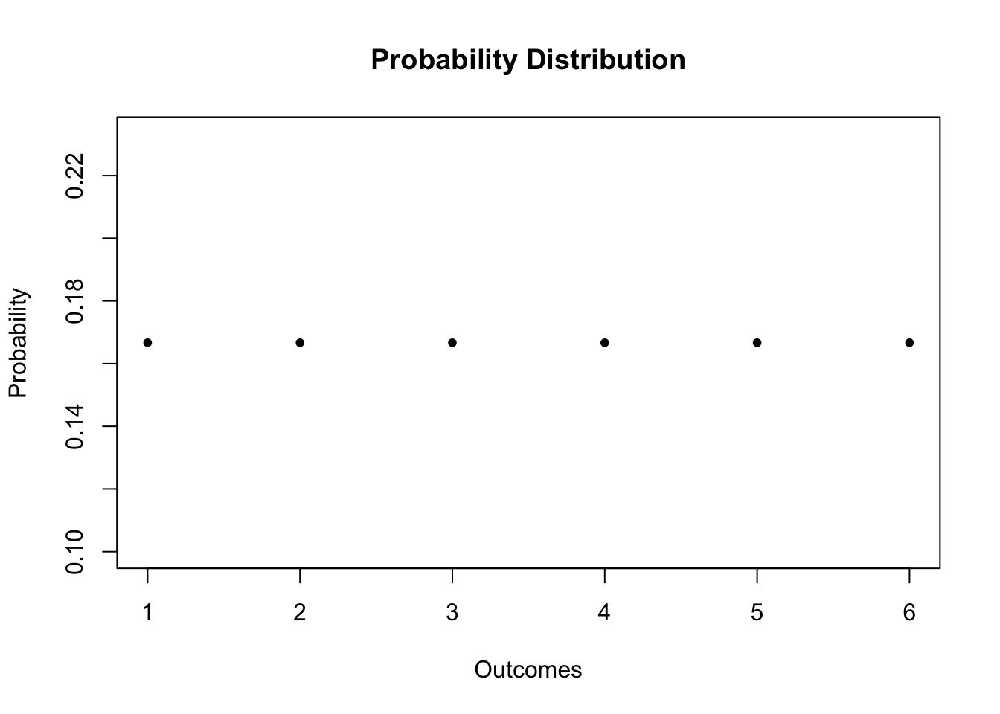
For the cumulative probability distribution we need the cumulative probabilities, i.e., we need the cumulative sums of the vector probability. These sums can be computed using cumsum().
# generate the vector of cumulative probabilities
cum_probability <- cumsum(probability)
# plot the probabilites
plot(cum_probability,
xlab = "Outcomes",
ylab="Cumulative Probability",
main = "Cumulative Probability Distribution",
pch=20) 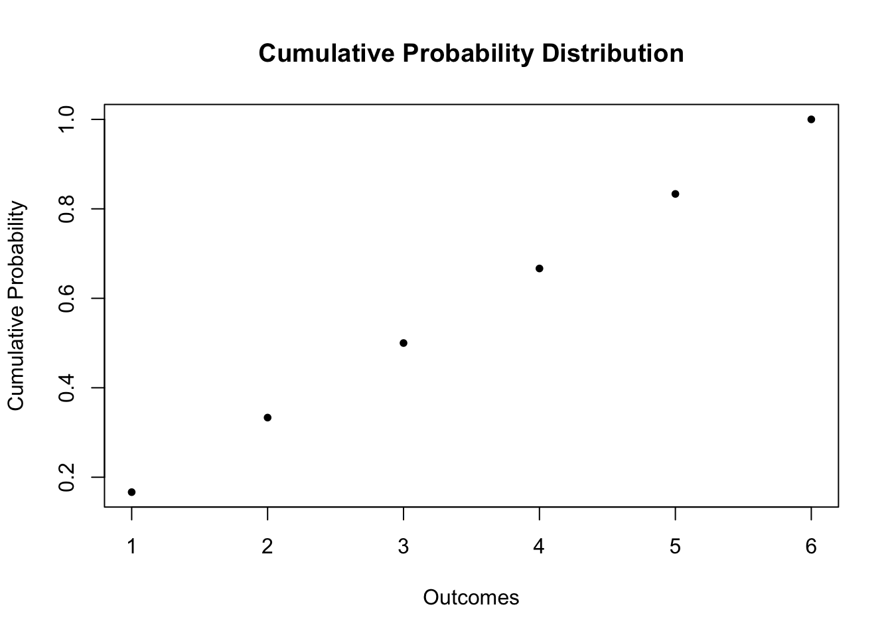
Bernoulli Trials
The set of elements from which sample() draws outcomes does not have to consist of numbers only. We might as well simulate coin tossing with outcomes \(H\) (heads) and \(T\) (tails).
The result of a single coin toss is a Bernoulli distributed random variable, i.e., a variable with two possible distinct outcomes.
Imagine you are about to toss a coin \(10\) times in a row and wonder how likely it is to end up with a \(5\) times heads. This is a typical example of what we call a Bernoulli experiment as it consists of \(n=10\) Bernoulli trials that are independent of each other and we are interested in the likelihood of observing \(k=5\) successes \((H)\) that occur with probability \(p=0.5\) (assuming a fair coin) in each trial. Note that the order of the outcomes does not matter here.
It is a well known result that the number of successes \(k\) in a Bernoulli experiment follows a binomial distribution. We denote this as
\[k \sim B(n,p).\]
The probability of observing \(k\) successes in the experiment \(B(n,p)\) is given by
\[f(k)=P(k)=\begin{pmatrix}n\\ k \end{pmatrix} \cdot p^k \cdot (1-p)^{n-k}=\frac{n!}{k!(n-k)!} \cdot p^k \cdot (1-p)^{n-k},\]
as \(\begin{pmatrix}n\\ k \end{pmatrix}\) the binomial coefficient.
In R, we can solve problems like the one stated above by means of the function dbinom() which calculates \(P(k\vert n, p)\) the probability of the binomial distribution given the parameters x (\(k\)),
size (\(n\)), and prob (\(p\)), see ?dbinom. Let us compute \(P(k=5\vert n = 10, p = 0.5)\) (we write this as \(P(k=5)\)).
We conclude that \(P(k=5)\), the probability of observing Head \(k=5\) times when tossing a fair coin \(n=10\) times is about \(24.6\%\).
Now assume we are interested in \(P(4 \leq k \leq 7)\), i.e., the probability of observing \(4\), \(5\), \(6\) or \(7\) successes for \(B(10, 0.5)\). This may be computed by providing a vector as the argument x in our call of dbinom() and summing up using sum().
# compute P(4 <= k <= 7) using 'dbinom()'
sum(dbinom(x = 4:7, size = 10, prob = 0.5))
#> [1] 0.7734375An alternative approach is to use pbinom(), the distribution function of the binomial distribution to compute \[P(4 \leq k \leq 7) = P(k \leq 7) - P(k\leq3 ).\]
# compute P(4 <= k <= 7) using 'pbinom()'
pbinom(size = 10, prob = 0.5, q = 7) - pbinom(size = 10, prob = 0.5, q = 3)
#> [1] 0.7734375The probability distribution of a discrete random variable is nothing but a list of all possible outcomes that can occur and their respective probabilities. In the coin tossing example, we have \(11\) possible outcomes for \(k\).
To visualize the probability distribution function of \(k\) we may therefore do the following:
# assign the probabilities
probability <- dbinom(x = k,
size = 10,
prob = 0.5)
# plot the outcomes against their probabilities
plot(x = k,
y = probability,
ylab="Probability",
main = "Probability Distribution Function",
pch=20) 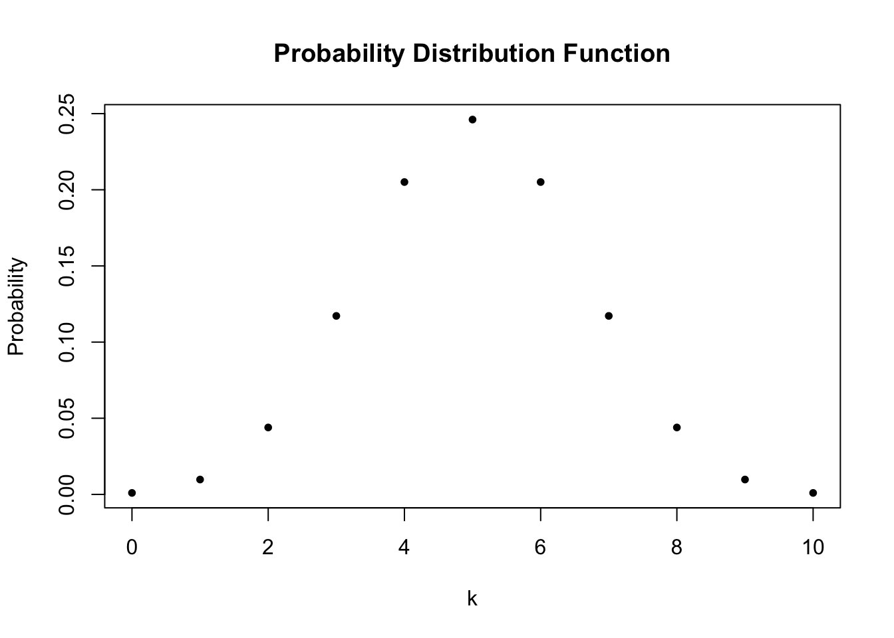
In a similar fashion we may plot the cumulative distribution function of \(k\) by executing the following code chunk:
# compute cumulative probabilities
prob <- pbinom(q = k,
size = 10,
prob = 0.5)
# plot the cumulative probabilities
plot(x = k,
y = prob,
ylab="Probability",
main = "Cumulative Distribution Function",
pch=20) 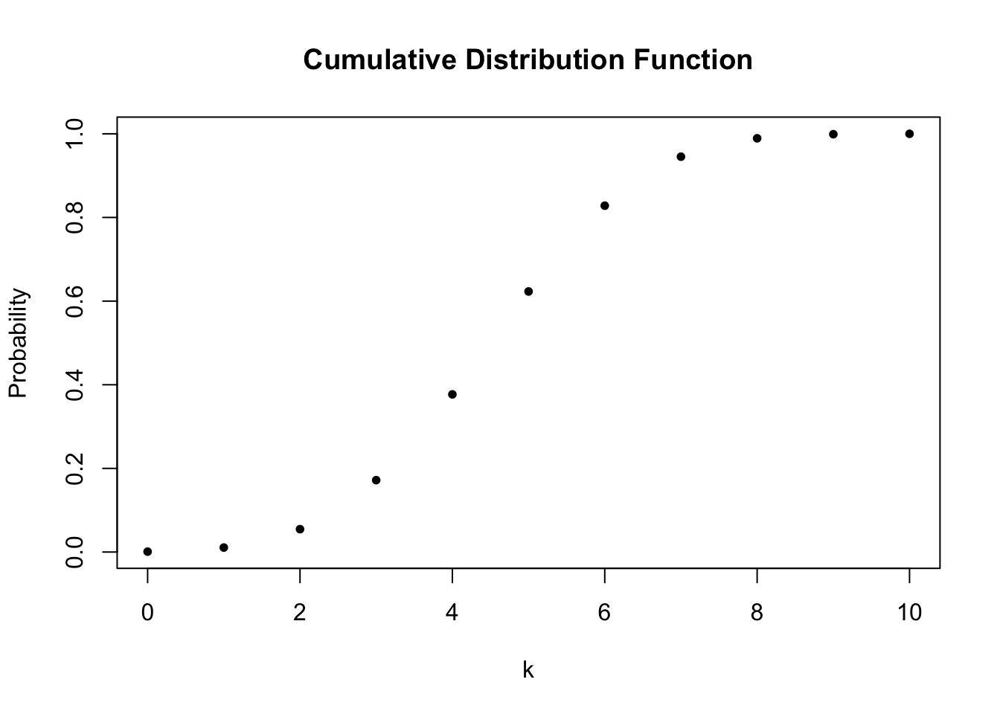
Expected Value, Mean and Variance
The expected value of a random variable is, loosely, the long-run average value of its outcomes when the number of repeated trials is large. For a discrete random variable, the expected value is computed as a weighted average of its possible outcomes whereby the weights are the related probabilities. This is formalized in Key Concept 2.1.
Key Concept 2.1
Expected Value and the Mean
Suppose the random variable $Y$ takes on $k$ possible values, $y_1, \dots, y_k$, where $y_1$ denotes the first value, $y_2$ denotes the second value, and so forth, and that the probability that $Y$ takes on $y_1$ is $p_1$, the probability that $Y$ takes on $y_2$ is $p_2$ and so forth. The expected value of $Y$, $E(Y)$ is defined as $$ E(Y) = y_1 p_1 + y_2 p_2 + \cdots + y_k p_k = \sum_{i=1}^k y_i p_i, $$ where the notation $\sum_{i=1}^k y_i p_i$ means "the sum of $y_i$ $p_i$ for $i$ running from $1$ to $k$". The expected value of $Y$ is also called the mean of $Y$ or the expectation of $Y$ and is denoted by $\mu_Y$.
In the dice example, the random variable, \(D\) say, takes on \(6\) possible values \(d_1 = 1, d_2 = 2, \dots, d_6 = 6\). Assuming a fair die, each of the \(6\) outcomes occurs with a probability of \(1/6\). It is therefore easy to calculate the exact value of \(E(D)\) by hand:
\[ E(D) = \frac{1}{6} \sum_{i=1}^6 d_i = 3.5. \]
\(E(D)\) is simply the average of the natural numbers from \(1\) to \(6\) since all weights \(p_i\) are \(1/6\). This can be easily calculated using the function mean() which computes the arithmetic mean of a numeric vector.
An example of sampling with replacement is rolling a dice three times in a row.
# set seed for reproducibility
set.seed(1)
# rolling a dice three times in a row
sample(1:6, 3, replace = T)
#> [1] 1 4 1Note that every call of sample(1:6, 3, replace = T) gives a different outcome since we draw with replacement at random. To allow you to reproduce the results of computations that involve random numbers, we will use set.seed() to set R’s random number generator to a specific state. You should check that it actually works: set the seed in your R session to 1 and verify that you obtain the same three random numbers!
Sequences of random numbers generated by R are pseudo-random numbers, i.e., they are not “truly” random but approximate the properties of sequences of random numbers. Since this approximation is good enough for our purposes we refer to pseudo-random numbers as random numbers throughout this book.
In general, sequences of random numbers are generated by functions called “pseudo-random number generators” (PRNGs). The PRNG in R works by performing some operation on a deterministic value. Generally, this value is the previous number generated by the PRNG. However, the first time the PRNG is used, there is no previous value. A “seed” is the first value of a sequence of numbers — it initializes the sequence. Each seed value will correspond to a different sequence of values. In R a seed can be set using set.seed().
This is convenient for us:
If we provide the same seed twice, we get the same sequence of numbers twice. Thus, setting a seed before executing R code which involves random numbers makes the outcome reproducible!Of course, we could also consider a much bigger number of trials, let’s say \(10000\). By doing so, it would be pointless to simply print the results to the console since, by default, R displays up to \(1000\) entries of large vectors and omits the remainder (give it a try). Eyeballing the numbers does not reveal much. Instead, let us calculate the sample average of the outcomes using mean() and see if the result comes close to the expected value \(E(D)=3.5\).
# set seed for reproducibility
set.seed(1)
# compute the sample mean of 10000 dice rolls
mean(sample(1:6,
10000,
replace = T))
#> [1] 3.5138We find the sample mean to be fairly close to the expected value. This result will be discussed in Chapter 2.2 in more detail.
Other frequently encountered measures are the variance and the standard deviation. Both are measures of the dispersion of a random variable.
Key Concept 2.2
Variance and Standard Deviation
The variance of the discrete random variable \(Y\), denoted by \(\sigma^2_Y\), is \[ \sigma^2_Y = \text{Var}(Y) = E\left[(Y-\mu_y)^2\right] = \sum_{i=1}^k (y_i - \mu_y)^2 p_i. \] The standard deviation of \(Y\) is \(\sigma_Y\), the square root of the variance. The units of the standard deviation are the same as the units of \(Y\).
The variance as defined in Key Concept 2.2, being a population quantity, is not implemented as a function in R. Instead we have the function var() which computes the sample variance
\[ s^2_Y = \frac{1}{n-1} \sum_{i=1}^n (y_i - \overline{y})^2. \]
Remember that \(s^2_Y\) is different from the so called population variance of a discrete random variable \(Y\),
\[ \text{Var}(Y) = \frac{1}{N} \sum_{i=1}^N (y_i - \mu_Y)^2. \]
since it measures how the \(n\) observations in the sample are dispersed around the sample average \(\overline{y}\). Instead, \(\text{Var}(Y)\) measures the dispersion of the whole population (\(N\) members) around the population mean \(\mu_Y\). The difference becomes clear when we look at our dice rolling example. For \(D\) we have
\[ \text{Var}(D) = \frac{1}{6} \sum_{i=1}^6 (d_i - 3.5)^2 = 2.92 \] which is obviously different from the result of \(s^2\) as computed by var().
The sample variance as computed by var() is an estimator of the population variance. You may check this using the widget below.
Probability Distributions of Continuous Random Variables
Since a continuous random variable takes on a continuum of possible values, we cannot use the concept of a probability distribution as used for discrete random variables. Instead, the probability distribution of a continuous random variable is summarized by its probability density function (PDF).
The cumulative probability distribution function (CDF) for a continuous random variable is defined just as in the discrete case. Hence, the CDF of a continuous random variables states the probability that the random variable is less than or equal to a particular value.
For completeness, we present revisions of Key Concepts 2.1 and 2.2 for the continuous case.
Key Concept 2.3
Probabilities, Expected Value and Variance of a Continuous Random Variable
Let \(f_Y(y)\) denote the probability density function of \(Y\). The probability that \(Y\) falls between \(a\) and \(b\) where \(a < b\) is \[ P(a \leq Y \leq b) = \int_a^b f_Y(y) \mathrm{d}y. \] We further have that \(P(-\infty \leq Y \leq \infty) = 1\) and therefore \(\int_{-\infty}^{\infty} f_Y(y) \mathrm{d}y = 1\).
As for the discrete case, the expected value of \(Y\) is the probability weighted average of its values. Due to continuity, we use integrals instead of sums. The expected value of \(Y\) is defined as
\[ E(Y) = \mu_Y = \int y f_Y(y) \mathrm{d}y. \]
The variance is the expected value of \((Y - \mu_Y)^2\). We thus have
\[\text{Var}(Y) = \sigma_Y^2 = \int (y - \mu_Y)^2 f_Y(y) \mathrm{d}y.\]Let us discuss an example:
Consider the continuous random variable \(X\) with PDF
\[ f_X(x) = \frac{3}{x^4}, x>1. \]
- We can show analytically that the integral of \(f_X(x)\) over the real line equals \(1\).
\[\begin{align} \int f_X(x) \mathrm{d}x =& \int_{1}^{\infty} \frac{3}{x^4} \mathrm{d}x \\ =& \lim_{t \rightarrow \infty} \int_{1}^{t} \frac{3}{x^4} \mathrm{d}x \\ =& \lim_{t \rightarrow \infty} -x^{-3} \rvert_{x=1}^t \\ =& -\left(\lim_{t \rightarrow \infty}\frac{1}{t^3} - 1\right) \\ =& 1 \end{align}\]
- The expectation of \(X\) can be computed as follows:
\[\begin{align} E(X) = \int x \cdot f_X(x) \mathrm{d}x =& \int_{1}^{\infty} x \cdot \frac{3}{x^4} \mathrm{d}x \\ =& - \frac{3}{2} x^{-2} \rvert_{x=1}^{\infty} \\ =& -\frac{3}{2} \left( \lim_{t \rightarrow \infty} \frac{1}{t^2} - 1 \right) \\ =& \frac{3}{2} \end{align}\]
- Note that the variance of \(X\) can be expressed as \(\text{Var}(X) = E(X^2) - E(X)^2\). Since \(E(X)\) has been computed in the previous step, we seek \(E(X^2)\):
\[\begin{align} E(X^2)= \int x^2 \cdot f_X(x) \mathrm{d}x =& \int_{1}^{\infty} x^2 \cdot \frac{3}{x^4} \mathrm{d}x \\ =& -3 x^{-1} \rvert_{x=1}^{\infty} \\ =& -3 \left( \lim_{t \rightarrow \infty} \frac{1}{t} - 1 \right) \\ =& 3 \end{align}\]
So we have shown that the area under the curve equals one, that the expectation is \(E(X)=\frac{3}{2}\) and we found the variance to be \(\text{Var}(X) = \frac{3}{4}\). However, this was tedious and, as we shall see, an analytic approach is not applicable for some PDFs, e.g., if integrals have no closed form solutions.
Luckily, R also enables us to easily find the results derived above. The tool we use for this is the function integrate(). First, we have to define the functions we want to calculate integrals for as R functions, i.e., the PDF \(f_X(x)\) as well as the expressions \(x\cdot f_X(x)\) and \(x^2\cdot f_X(x)\).
Next, we use integrate() and set lower and upper limits of integration to \(1\) and \(\infty\) using arguments lower and upper. By default, integrate() prints the result along with an estimate of the approximation error to the console. However, the outcome is not a numeric value one can readily do further calculation with. In order to get only a numeric value of the integral, we need to use the $ operator in conjunction with the value. The $ operator is used to extract elements by name from an object of type list.
# compute area under the density curve
area <- integrate(f,
lower = 1,
upper = Inf)$value
area
#> [1] 1
# compute E(X)
EX <- integrate(g,
lower = 1,
upper = Inf)$value
EX
#> [1] 1.5
# compute Var(X)
VarX <- integrate(h,
lower = 1,
upper = Inf)$value - EX^2
VarX
#> [1] 0.75Although there is a wide variety of distributions, the ones most often encountered in econometrics are the normal, chi-squared, Student \(t\) and \(F\) distributions. Therefore we will discuss some core R functions that allow us to do calculations involving densities, probabilities and quantiles of these distributions.
Every probability distribution that R handles has four basic functions whose names consist of a prefix followed by a root name. As an example, take the normal distribution. The root name of all four functions associated with the normal distribution is norm. The four prefixes are
- d for “density” - probability function / probability density function
- p for “probability” - cumulative distribution function
- q for “quantile” - quantile function (inverse cumulative distribution function)
- r for “random” - random number generator
Thus, for the normal distribution we have the R functions dnorm(), pnorm(), qnorm() and rnorm().
The Normal Distribution
Perhaps the most important probability distribution considered here is the normal distribution. This is not least due to the special role of the standard normal distribution and the Central Limit Theorem which is to be treated shortly. Normal distributions are symmetric and bell-shaped. A normal distribution is characterized by its mean \(\mu\) and its standard deviation \(\sigma\), concisely expressed by \(\mathcal{N}(\mu,\sigma^2)\). The normal distribution has the PDF
\[\begin{align} f(x) = \frac{1}{\sqrt{2 \pi} \sigma} \exp{-(x - \mu)^2/(2 \sigma^2)}. \end{align}\]
For the standard normal distribution we have \(\mu=0\) and \(\sigma=1\). Standard normal variates are often denoted by \(Z\). Usually, the standard normal PDF is denoted by \(\phi\) and the standard normal CDF is denoted by \(\Phi\). Hence, \[ \phi(c) = \Phi'(c) \ \ , \ \ \Phi(c) = P(Z \leq c) \ \ , \ \ Z \sim \mathcal{N}(0,1).\] Note that the notation X \(\sim\) Y reads as “X is distributed as Y”. In R, we can conveniently obtain densities of normal distributions using the function dnorm(). Let us draw a plot of the standard normal density function using curve() together with dnorm().
# draw a plot of the N(0,1) PDF
curve(dnorm(x),
xlim = c(-3.5, 3.5),
ylab = "Density",
main = "Standard Normal Density Function") 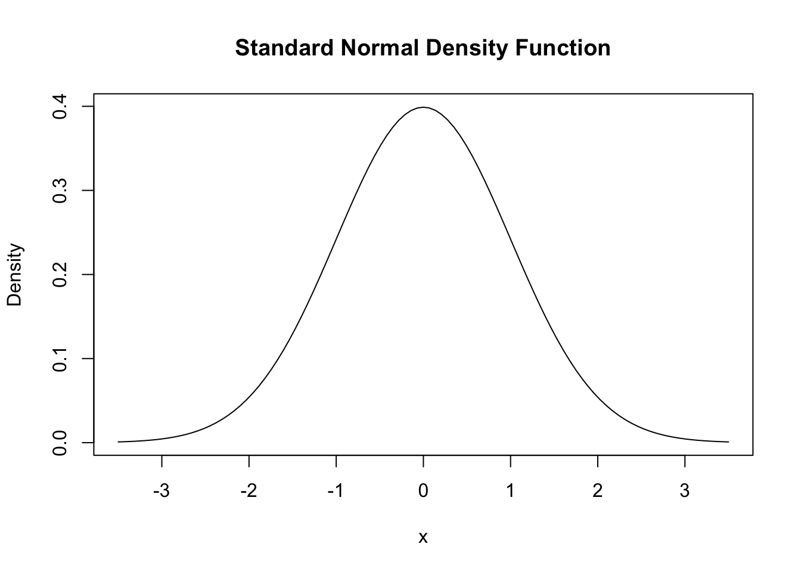
We can obtain the density at different positions by passing a vector to dnorm().
# compute density at x=-1.96, x=0 and x=1.96
dnorm(x = c(-1.96, 0, 1.96))
#> [1] 0.05844094 0.39894228 0.05844094Similar to the PDF, we can plot the standard normal CDF using curve(). We can use dnorm() for this but it is much more convenient to rely on pnorm().
# plot the standard normal CDF
curve(pnorm(x),
xlim = c(-3.5, 3.5),
ylab = "Probability",
main = "Standard Normal Cumulative Distribution Function")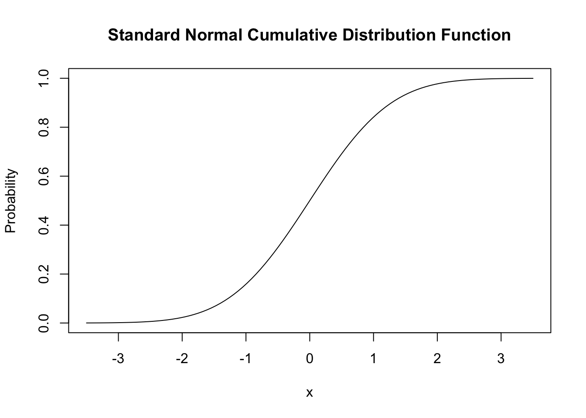
We can also use R to calculate the probability of events associated with a standard normal variate.
Let us say we are interested in \(P(Z \leq 1.337)\). For some continuous random variable \(Z\) on \([-\infty,\infty]\) with density \(g(x)\) we would have to determine \(G(x)\), the anti-derivative of \(g(x)\) so that
\[ P(Z \leq 1.337 ) = G(1.337) = \int_{-\infty}^{1.337} g(x) \mathrm{d}x. \]
If \(Z \sim \mathcal{N}(0,1)\), we have \(g(x)=\phi(x)\). There is no analytic solution to the integral above. Fortunately, R offers good approximations. The first approach makes use of the function integrate() which allows to solve one-dimensional integration problems using a numerical method. For this, we first define the function we want to compute the integral of as an R function f. In our example, f is the standard normal density function and hence takes a single argument x. Following the definition of \(\phi(x)\) we define f as
# define the standard normal PDF as an R function
f <- function(x) {
1/(sqrt(2 * pi)) * exp(-0.5 * x^2)
}Let us check if this function computes standard normal densities by passing a vector.
# define a vector of reals
quants <- c(-1.96, 0, 1.96)
# compute densities
f(quants)
#> [1] 0.05844094 0.39894228 0.05844094
# compare to the results produced by 'dnorm()'
f(quants) == dnorm(quants)
#> [1] TRUE TRUE TRUEThe results produced by f() are indeed equivalent to those given by dnorm().
Next, we call integrate() on f() and specify the arguments lower and upper, the lower and upper limits of integration.
# integrate f()
integrate(f,
lower = -Inf,
upper = 1.337)
#> 0.9093887 with absolute error < 1.7e-07We find that the probability of observing \(Z \leq 1.337\) is about \(90.94\%\).
A second and much more convenient way is to use the function pnorm(), the standard normal cumulative distribution function.
The result matches the outcome of the approach using integrate().
Let us discuss some further examples:
A commonly known result is that \(95\%\) probability mass of a standard normal distribution lies in the interval \([-1.96, 1.96]\), that is, in a distance of about \(2\) standard deviations to the mean. We can easily confirm this by calculating \[ P(-1.96 \leq Z \leq 1.96) = 1-2\times P(Z \leq -1.96), \] due to symmetry of the standard normal PDF. Thanks to R, we can abandon the table of the standard normal CDF found in many other textbooks and instead solve this fast by using pnorm().
To make statements about the probability of observing outcomes of \(Y\) in some specific range it is more convenient when we standardize first as shown in Key Concept 2.4.
Key Concept 2.4
Computing Probabilities Involving Normal Random Variables
Suppose \(Y\) is normally distributed with mean \(\mu\) and variance \(\sigma^2\): \[Y \sim \mathcal{N}(\mu, \sigma^2)\] Then \(Y\) is standardized by subtracting it from its mean and then dividing it by its standard deviation: \[ Z = \frac{Y -\mu}{\sigma}. \] Let \(c_1\) and \(c_2\) denote two numbers whereby \(c_1 < c_2\) and further \(d_1 = (c_1 - \mu) / \sigma\) and \(d_2 = (c_2 - \mu)/\sigma\). Then
\[\begin{align*} P(Y \leq c_2) =& \, P(Z \leq d_2) = \Phi(d_2), \\ P(Y \geq c_1) =& \, P(Z \geq d_1) = 1 - \Phi(d_1), \\ P(c_1 \leq Y \leq c_2) =& \, P(d_1 \leq Z \leq d_2) = \Phi(d_2) - \Phi(d_1). \end{align*}\]
Now consider a random variable \(Y\) with \(Y \sim \mathcal{N}(5, 25)\). R functions that handle the normal distribution can perform the standardization. If we are interested in \(P(3 \leq Y \leq 4)\) we can use pnorm() and adjust for a mean and/or a standard deviation that deviate from \(\mu=0\) and \(\sigma = 1\) by specifying the arguments mean and sd accordingly. Attention: the argument sd requires the standard deviation, not the variance!
An extension of the normal distribution in a univariate setting is the multivariate normal distribution. The joint PDF of two random normal variables \(X\) and \(Y\) is given by
\[\begin{align} \begin{split} g_{X,Y}(x,y) =& \, \frac{1}{2\pi\sigma_X\sigma_Y\sqrt{1-\rho_{XY}^2}} \\ \cdot & \, \exp \left\{ \frac{1}{-2(1-\rho_{XY}^2)} \left[ \left( \frac{x-\mu_x}{\sigma_X} \right)^2 - 2\rho_{XY}\left( \frac{x-\mu_X}{\sigma_X} \right)\left( \frac{y-\mu_Y}{\sigma_Y} \right) + \left( \frac{y-\mu_Y}{\sigma_Y} \right)^2 \right] \right\}. \end{split} \tag{2.1} \end{align}\]
Equation (2.1) contains the bivariate normal PDF. It is somewhat hard to gain insights from this complicated expression. Instead, let us consider the special case where \(X\) and \(Y\) are uncorrelated standard normal random variables with densities \(f_X(x)\) and \(f_Y(y)\) with joint normal distribution. We then have the parameters \(\sigma_X = \sigma_Y = 1\), \(\mu_X=\mu_Y=0\) (due to marginal standard normality) and \(\rho_{XY}=0\) (due to independence). The joint density of \(X\) and \(Y\) then becomes
\[ g_{X,Y}(x,y) = f_X(x) f_Y(y) = \frac{1}{2\pi} \cdot \exp \left\{ -\frac{1}{2} \left[x^2 + y^2 \right] \right\}, \tag{2.2} \]
the PDF of the bivariate standard normal distribution. The widget below provides an interactive three-dimensional plot of (2.2).
By moving the cursor over the plot you can see that the density is rotationally invariant, i.e., the density at \((a, b)\) solely depends on the distance of \((a, b)\) to the origin: geometrically, regions of equal density are edges of concentric circles in the XY-plane, centered at \((\mu_X = 0, \mu_Y = 0)\).
The normal distribution has some remarkable characteristics. For example, for two jointly normally distributed variables \(X\) and \(Y\), the conditional expectation function is linear: one can show that \[ E(Y\vert X) = E(Y) + \rho \frac{\sigma_Y}{\sigma_X} (X - E(X)). \] The interactive widget below shows standard bivariate normally distributed sample data along with the conditional expectation function \(E(Y\vert X)\) and the marginal densities of \(X\) and \(Y\). All elements adjust accordingly as you vary the parameters.
The Chi-Squared Distribution
The chi-squared distribution is another distribution relevant in econometrics. It is often needed when testing special types of hypotheses frequently encountered when dealing with regression models.
The sum of \(M\) squared independent standard normal distributed random variables follows a chi-squared distribution with \(M\) degrees of freedom:
\[\begin{align*} Z_1^2 + \dots + Z_M^2 = \sum_{m=1}^M Z_m^2 \sim \chi^2_M \ \ \text{with} \ \ Z_m \overset{i.i.d.}{\sim} \mathcal{N}(0,1). \tag{2.2} \end{align*}\]
A \(\chi^2\) distributed random variable with \(M\) degrees of freedom has expectation \(M\), mode at \(M-2\) for \(M \geq 2\) and variance \(2 \cdot M\). For example, for
\[ Z_1,Z_2,Z_3 \overset{i.i.d.}{\sim} \mathcal{N}(0,1), \]
it holds that
\[ Z_1^2+Z_2^2+Z_3^2 \sim \chi^2_3. \tag{2.3} \] Using the code below, we can display the PDF and the CDF of a \(\chi^2_3\) random variable in a single plot. This is achieved by setting the argument add = TRUE in the second call of curve(). Further we adjust limits of both axes using xlim and ylim and choose different colors to make both functions better distinguishable. The plot is completed by adding a legend with help of legend().
# plot the PDF
curve(dchisq(x, df = 3),
xlim = c(0, 10),
ylim = c(0, 1),
col = "blue",
ylab = "",
main = "p.d.f. and c.d.f of Chi-Squared Distribution, M = 3")
# add the CDF to the plot
curve(pchisq(x, df = 3),
xlim = c(0, 10),
add = TRUE,
col = "red")
# add a legend to the plot
legend("topleft",
c("PDF", "CDF"),
col = c("blue", "red"),
lty = c(1, 1))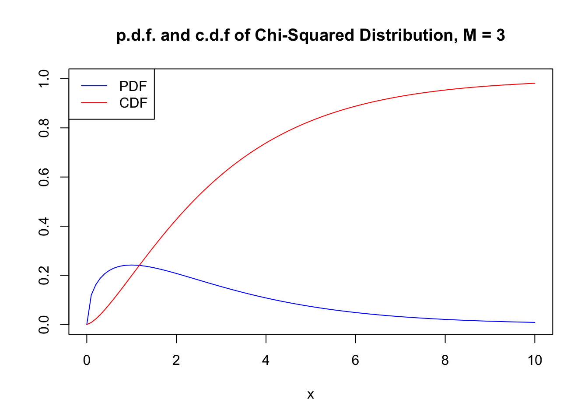
Since the outcomes of a \(\chi^2_M\) distributed random variable are always positive, the support of the related PDF and CDF is \(\mathbb{R}_{\geq0}\).
As expectation and variance depend (solely!) on the degrees of freedom, the distribution’s shape changes drastically if we vary the number of squared standard normals that are summed up. This relation is often depicted by overlaying densities for different \(M\), see the Wikipedia Article.
We reproduce this here by plotting the density of the \(\chi_1^2\) distribution on the interval \([0,15]\) with curve(). In the next step, we loop over degrees of freedom \(M=2,...,7\) and add a density curve for each \(M\) to the plot. We also adjust the line color for each iteration of the loop by setting col = M. At last, we add a legend that displays degrees of freedom and the associated colors.
# plot the density for M=1
curve(dchisq(x, df = 1),
xlim = c(0, 15),
xlab = "x",
ylab = "Density",
main = "Chi-Square Distributed Random Variables")
# add densities for M=2,...,7 to the plot using a 'for()' loop
for (M in 2:7) {
curve(dchisq(x, df = M),
xlim = c(0, 15),
add = T,
col = M)
}
# add a legend
legend("topright",
as.character(1:7),
col = 1:7 ,
lty = 1,
title = "D.F.")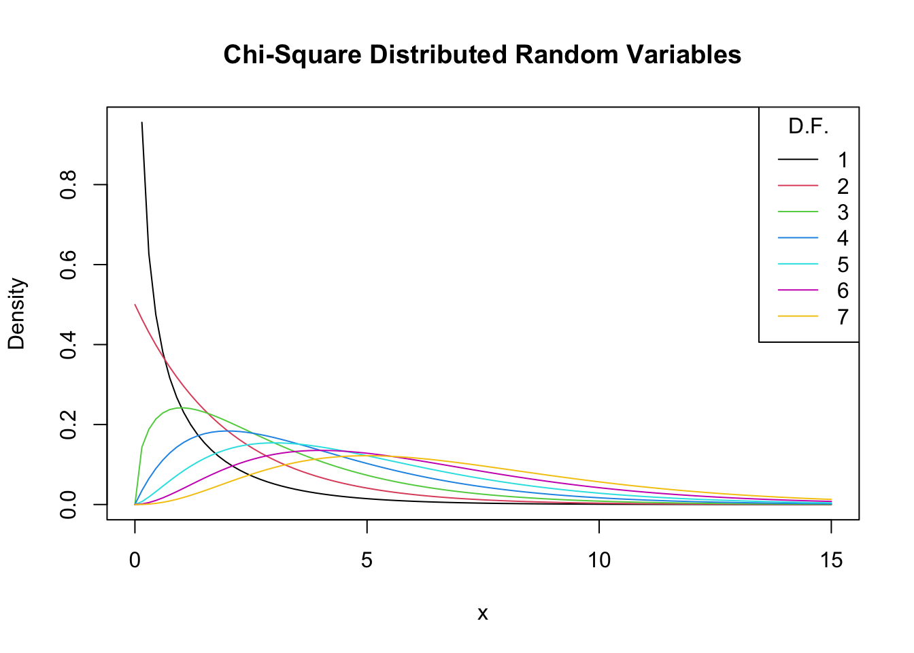
Increasing the degrees of freedom shifts the distribution to the right (the mode becomes larger) and increases the dispersion (the distribution’s variance grows).
The Student t Distribution
Let \(Z\) be a standard normal variate, \(W\) a \(\chi^2_M\) random variable and further assume that \(Z\) and \(W\) are independent. Then it holds that
\[ \frac{Z}{\sqrt{W/M}} =:X \sim t_M \] and \(X\) follows a Student \(t\) distribution (or simply \(t\) distribution) with \(M\) degrees of freedom.
Similar to the \(\chi^2_M\) distribution, the shape of a \(t_M\) distribution depends on \(M\). \(t\) distributions are symmetric, bell-shaped and look similar to a normal distribution, especially when \(M\) is large. This is not a coincidence: for a sufficiently large \(M\), the \(t_M\) distribution can be approximated by the standard normal distribution. This approximation works reasonably well for \(M\geq 30\). As we will illustrate later by means of a small simulation study, the \(t_{\infty}\) distribution is the standard normal distribution.
A \(t_M\) distributed random variable \(X\) has an expectation if \(M>1\) and it has a variance if \(M>2\).
\[\begin{align} E(X) =& 0, \ M>1 \\ \text{Var}(X) =& \frac{M}{M-2}, \ M>2 \end{align}\]
Let us plot some \(t\) distributions with different \(M\) and compare them to the standard normal distribution.
# plot the standard normal density
curve(dnorm(x),
xlim = c(-4, 4),
xlab = "x",
lty = 2,
ylab = "Density",
main = "Densities of t Distributions")
# plot the t density for M=2
curve(dt(x, df = 2),
xlim = c(-4, 4),
col = 2,
add = T)
# plot the t density for M=4
curve(dt(x, df = 4),
xlim = c(-4, 4),
col = 3,
add = T)
# plot the t density for M=25
curve(dt(x, df = 25),
xlim = c(-4, 4),
col = 4,
add = T)
# add a legend
legend("topright",
c("N(0, 1)", "M=2", "M=4", "M=25"),
col = 1:4,
lty = c(2, 1, 1, 1))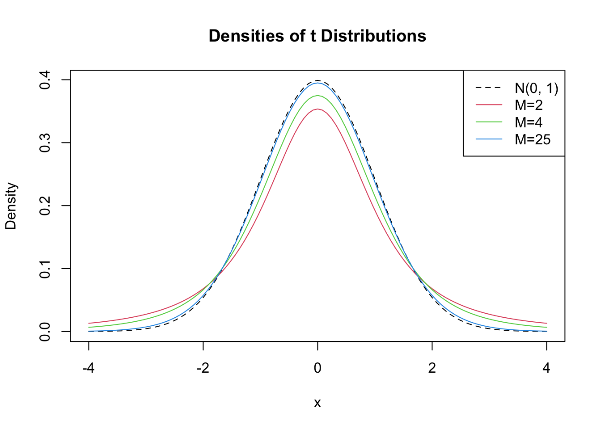
The plot illustrates what has been said in the previous paragraph: as the degrees of freedom increase, the shape of the \(t\) distribution comes closer to that of a standard normal bell curve. Already for \(M=25\), we find little difference to the standard normal density. If \(M\) is small, we find the distribution to have heavier tails than a standard normal, i.e., it has a “fatter” bell shape.
The F Distribution
Another ratio of random variables important to econometricians is the ratio of two independent \(\chi^2\) distributed random variables that are divided by their degrees of freedom \(M\) and \(n\). The quantity
\[ \frac{W/M}{V/n} \sim F_{M,n} \ \ \text{with} \ \ W \sim \chi^2_M \ \ , \ \ V \sim \chi^2_n , \] follows an \(F\) distribution with numerator degrees of freedom \(M\) and denominator degrees of freedom \(n\), denoted \(F_{M,n}\). The distribution was first derived by George Snedecor but was named in honor of Sir Ronald Fisher.
By definition, the support of both PDF and CDF of an \(F_{M,n}\) distributed random variable is \(\mathbb{R}_{\geq0}\).
Say we have an \(F\) distributed random variable \(Y\) with numerator degrees of freedom \(3\) and denominator degrees of freedom \(14\) and are interested in \(P(Y \geq 2)\). This can be computed with the help of the function pf(). By setting the argument lower.tail to FALSE we ensure that R computes \(1- P(Y \leq 2)\), i.e, the probability mass in the tail right of \(2\).
We can visualize this probability by drawing a line plot of the related density and adding a color shading with polygon().
# define coordinate vectors for vertices of the polygon
x <- c(2, seq(2, 10, 0.01), 10)
y <- c(0, df(seq(2, 10, 0.01), 3, 14), 0)
# draw density of F_{3, 14}
curve(df(x ,3 ,14),
ylim = c(0, 0.8),
xlim = c(0, 10),
ylab = "Density",
main = "Density Function")
# draw the polygon
polygon(x, y, col = "orange")
The \(F\) distribution is related to many other distributions. An important special case encountered in econometrics arises if the denominator degrees of freedom are large such that the \(F_{M,n}\) distribution can be approximated by the \(F_{M,\infty}\) distribution which turns out to be simply the distribution of a \(\chi^2_M\) random variable divided by its degrees of freedom \(M\),
\[ W/M \sim F_{M,\infty} \ \ , \ \ W \sim \chi^2_M. \]
2.2 Random Sampling and the Distribution of Sample Averages
To clarify the basic idea of random sampling, let us jump back to the dice rolling example:
Suppose we are rolling the dice \(n\) times. This means we are interested in the outcomes of random \(Y_i, \ i=1,...,n\) which are characterized by the same distribution. Since these outcomes are selected randomly, they are random variables themselves and their realizations will differ each time we draw a sample, i.e., each time we roll the dice \(n\) times. Furthermore, each observation is randomly drawn from the same population, that is, the numbers from \(1\) to \(6\), and their individual distribution is the same. Hence \(Y_1,\dots,Y_n\) are identically distributed.
Moreover, we know that the value of any of the \(Y_i\) does not provide any information on the remainder of the outcomes. In our example, rolling a six as the first observation in our sample does not alter the distributions of \(Y_2,\dots,Y_n\): all numbers are equally likely to occur. This means that all \(Y_i\) are also independently distributed. Thus \(Y_1,\dots,Y_n\) are independently and identically distributed (i.i.d.). The dice example uses this most simple sampling scheme. That is why it is called simple random sampling. This concept is summarized in Key Concept 2.5.
Key Concept 2.5
Simple Random Sampling and i.i.d. Random Variables
In simple random sampling, \(n\) objects are drawn at random from a population. Each object is equally likely to end up in the sample. We denote the value of the random variable \(Y\) for the \(i^{th}\) randomly drawn object as \(Y_i\). Since all objects are equally likely to be drawn and the distribution of \(Y_i\) is the same for all \(i\), the \(Y_i, \dots, Y_n\) are independently and identically distributed (i.i.d.). This means the distribution of \(Y_i\) is the same for all \(i=1,\dots,n\) and \(Y_1\) is distributed independently of \(Y_2, \dots, Y_n\) and \(Y_2\) is distributed independently of \(Y_1, Y_3, \dots, Y_n\) and so forth.
What happens if we consider functions of the sample data? Consider the example of rolling a dice two times in a row once again. A sample now consists of two independent random draws from the set \(\{1,2,3,4,5,6\}\). It is apparent that any function of these two random variables, e.g. their sum, is also random. Convince yourself by executing the code below several times.
Clearly, this sum, let us call it \(S\), is a random variable as it depends on randomly drawn summands. For this example, we can completely enumerate all outcomes and hence write down the theoretical probability distribution of our function of the sample data \(S\):
We face \(6^2=36\) possible pairs. Those pairs are
\[\begin{align*} &(1,1) (1,2) (1,3) (1,4) (1,5) (1,6) \\ &(2,1) (2,2) (2,3) (2,4) (2,5) (2,6) \\ &(3,1) (3,2) (3,3) (3,4) (3,5) (3,6) \\ &(4,1) (4,2) (4,3) (4,4) (4,5) (4,6) \\ &(5,1) (5,2) (5,3) (5,4) (5,5) (5,6) \\ &(6,1) (6,2) (6,3) (6,4) (6,5) (6,6) \end{align*}\]
Thus, possible outcomes for \(S\) are
\[ \left\{ 2,3,4,5,6,7,8,9,10,11,12 \right\} . \] Enumeration of outcomes yields
\[\begin{align} P(S) = \begin{cases} 1/36, \ & S = 2 \\ 2/36, \ & S = 3 \\ 3/36, \ & S = 4 \\ 4/36, \ & S = 5 \\ 5/36, \ & S = 6 \\ 6/36, \ & S = 7 \\ 5/36, \ & S = 8 \\ 4/36, \ & S = 9 \\ 3/36, \ & S = 10 \\ 2/36, \ & S = 11 \\ 1/36, \ & S = 12 \end{cases} \end{align}\]
We can also compute \(E(S)\) and \(\text{Var}(S)\) as stated in Key Concept 2.1 and Key Concept 2.2.
# Vector of outcomes
S <- 2:12
# Vector of probabilities
PS <- c(1:6, 5:1) / 36
# Expectation of S
ES <- sum(S * PS)
ES
#> [1] 7
# Variance of S
VarS <- sum((S - c(ES))^2 * PS)
VarS
#> [1] 5.833333So the distribution of \(S\) is known. It is also evident that its distribution differs considerably from the marginal distribution, i.e, the distribution of a single dice roll’s outcome, \(D\) . Let us visualize this using bar plots.
# divide the plotting area into one row with two columns
par(mfrow = c(1, 2),cex.main=1)
# plot the distribution of S
barplot(PS,
ylim = c(0, 0.2),
xlab = "S",
ylab = "Probability",
col = "steelblue",
space = 0,
main = "Sum of Two Dice Rolls")
# plot the distribution of D
probability <- rep(1/6, 6)
names(probability) <- 1:6
barplot(probability,
ylim = c(0, 0.2),
xlab = "D",
col = "steelblue",
space = 0,
main = "Outcome of a Single Dice Roll")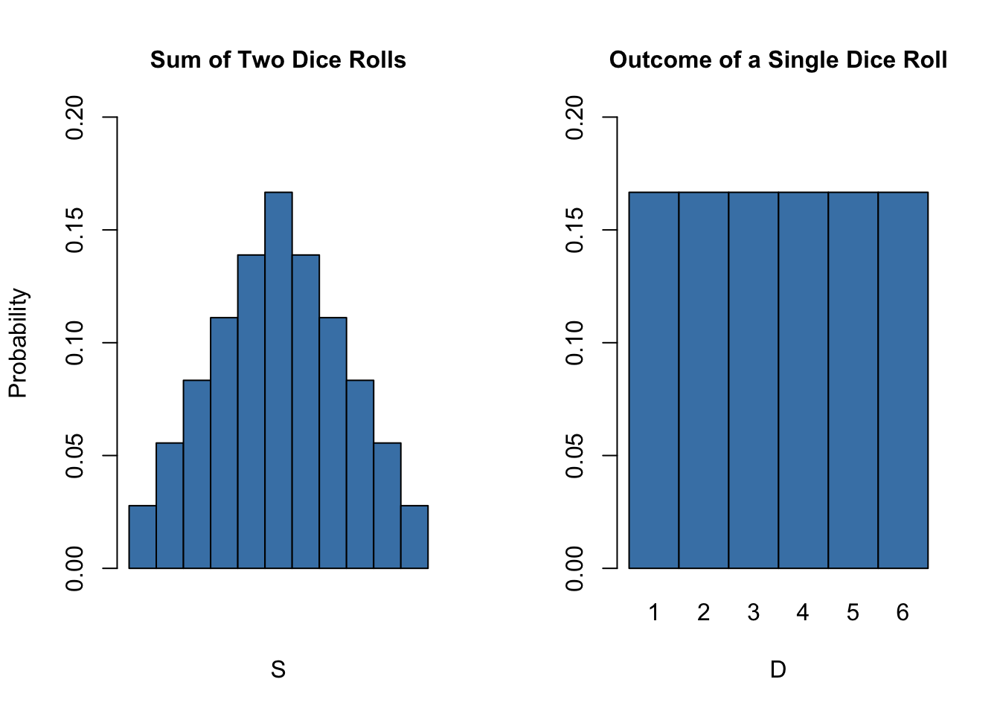
Many econometric procedures deal with averages of sampled data. It is typically assumed that observations are drawn randomly from a larger, unknown population. As demonstrated for the sample function \(S\), computing an average of a random sample has the effect that the average is a random variable itself. This random variable in turn has a probability distribution, called the sampling distribution. Knowledge about the sampling distribution of the average is therefore crucial for understanding the performance of econometric procedures.
The sample average of a sample of \(n\) observations \(Y_1, \dots, Y_n\) is
\[ \overline{Y} = \frac{1}{n} \sum_{i=1}^n Y_i = \frac{1}{n} (Y_1 + Y_2 + \cdots + Y_n). \] \(\overline{Y}\) is also called the sample mean.
Mean and Variance of the Sample Mean
Suppose that \(Y_1,\dots,Y_n\) are i.i.d. and denote \(\mu_Y\) and \(\sigma_Y^2\) as the mean and the variance of the \(Y_i\). Then we have that
\[ E(\overline{Y}) = E\left(\frac{1}{n} \sum_{i=1}^n Y_i \right) = \frac{1}{n} E\left(\sum_{i=1}^n Y_i\right) = \frac{1}{n} \sum_{i=1}^n E\left(Y_i\right) = \frac{1}{n} \cdot n \cdot \mu_Y = \mu_Y \] and
\[\begin{align*} \text{Var}(\overline{Y}) =& \text{Var}\left(\frac{1}{n} \sum_{i=1}^n Y_i \right) \\ =& \frac{1}{n^2} \sum_{i=1}^n \text{Var}(Y_i) + \frac{1}{n^2} \sum_{i=1}^n \sum_{j=1, j\neq i}^n \text{cov}(Y_i,Y_j) \\ =& \frac{\sigma^2_Y}{n} \\ =& \sigma_{\overline{Y}}^2. \end{align*}\]
The second summand vanishes since \(\text{cov}(Y_i,Y_j)=0\) for \(i\neq j\) due to independence. Consequently, the standard deviation of the sample mean is given by \[\sigma_{\overline{Y}} = \frac{\sigma_Y}{\sqrt{n}}.\]
It is worthwhile to mention that these results hold irrespective of the underlying distribution of the \(Y_i\).
The Sampling Distribution of \(\overline{Y}\) when \(Y\) Is Normally Distributed
If \(Y_1,\dots,Y_n\) are i.i.d. draws from a normal distribution with mean \(\mu_Y\) and variance \(\sigma_Y^2\), the following holds for their sample average \(\overline{Y}\):
\[ \overline{Y} \sim \mathcal{N}(\mu_Y, \sigma_Y^2/n) \tag{2.4} \]
For example, if a sample \(Y_i\) with \(i=1,\dots,10\) is drawn from a standard normal distribution with mean \(\mu_Y = 0\) and variance \(\sigma_Y^2=1\) we have
\[ \overline{Y} \sim \mathcal{N}(0,0.1).\]
We can use R’s random number generation facilities to verify this result. The basic idea is to simulate outcomes of the true distribution of \(\overline{Y}\) by repeatedly drawing random samples of 10 observations from the \(\mathcal{N}(0,1)\) distribution and computing their respective averages. If we do this for a large number of repetitions, the simulated data set of averages should quite accurately reflect the theoretical distribution of \(\overline{Y}\) if the theoretical result holds.
The approach sketched above is an example of what is commonly known as Monte Carlo Simulation or Monte Carlo Experiment. To perform this simulation in R, we proceed as follows:
Choose a sample size n and the number of samples to be drawn, reps.
Use the function replicate() in conjunction with rnorm() to draw n observations from the standard normal distribution rep times.
Note: the outcome of replicate() is a matrix with dimensions n \(\times\) rep. It contains the drawn samples as columns.
Compute sample means using colMeans(). This function computes the mean of each column, i.e., of each sample and returns a vector.
# set sample size and number of samples
n <- 10
reps <- 10000
# perform random sampling
samples <- replicate(reps, rnorm(n)) # 10 x 10000 sample matrix
# compute sample means
sample.avgs <- colMeans(samples)We then end up with a vector of sample averages. You can check the vector property of sample.avgs:
# check that 'sample.avgs' is a vector
is.vector(sample.avgs)
#> [1] TRUE
# print the first few entries to the console
head(sample.avgs)
#> [1] -0.1045919 0.2264301 0.5308715 -0.2243476 0.2186909 0.2564663A straightforward approach to examine the distribution of univariate numerical data is to plot it as a histogram and compare it to some known or assumed distribution. By default, hist() will give us a frequency histogram, i.e., a bar chart where observations are grouped into ranges, also called bins. The ordinate reports the number of observations falling into each of the bins. Instead, we want it to report density estimates for comparison purposes. This is achieved by setting the argument freq = FALSE. The number of bins is adjusted by the argument breaks.
Using curve(), we overlay the histogram with a red line, the theoretical density of a \(\mathcal{N}(0, 0.1)\) random variable. Remember to use the argument add = TRUE to add the curve to the current plot. Otherwise R will open a new graphic device and discard the previous plot!3
# Plot the density histogram
hist(sample.avgs,
ylim = c(0, 1.4),
col = "steelblue" ,
freq = F,
breaks = 20,
main="Histogram of Sample Averages",
xlab="Sample Averages")
# overlay the theoretical distribution of sample averages on top of the histogram
curve(dnorm(x, sd = 1/sqrt(n)),
col = "red",
lwd = "2",
add = T)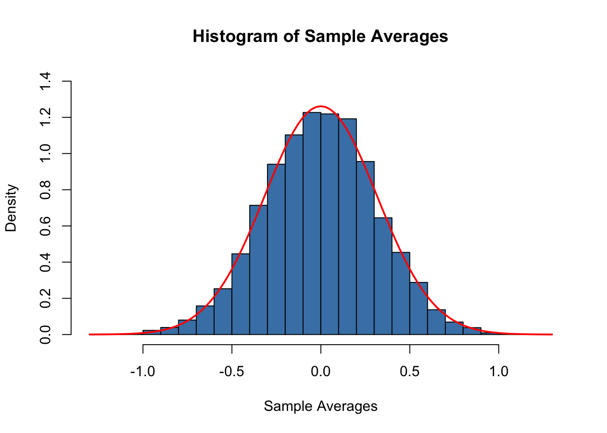
The sampling distribution of \(\overline{Y}\) is indeed very close to that of a \(\mathcal{N}(0, 0.1)\) distribution so the Monte Carlo simulation supports the theoretical claim.
Let us discuss another example where using simple random sampling in a simulation setup helps to verify a well known result. As discussed before, the Chi-squared distribution with \(M\) degrees of freedom arises as the distribution of the sum of \(M\) independent squared standard normal distributed random variables.
To visualize the claim stated in equation (2.3), we proceed similarly as in the example before:
- Choose the degrees of freedom, DF, and the number of samples to be drawn reps.
- Draw reps random samples of size DF from the standard normal distribution using replicate().
- For each sample, square the outcomes and sum them up column-wise. Store the results.
Again, we produce a density estimate for the distribution underlying our simulated data using a density histogram and overlay it with a line graph of the theoretical density function of the \(\chi^2_3\) distribution.
# number of repetitions
reps <- 10000
# set degrees of freedom of a chi-Square Distribution
DF <- 3
# sample 10000 column vectors à 3 N(0,1) R.V.S
Z <- replicate(reps, rnorm(DF))
# column sums of squares
X <- colSums(Z^2)
# histogram of column sums of squares
hist(X,
freq = F,
col = "steelblue",
breaks = 40,
ylab = "Density",
main = "")
# add theoretical density
curve(dchisq(x, df = DF),
type = 'l',
lwd = 2,
col = "red",
add = T)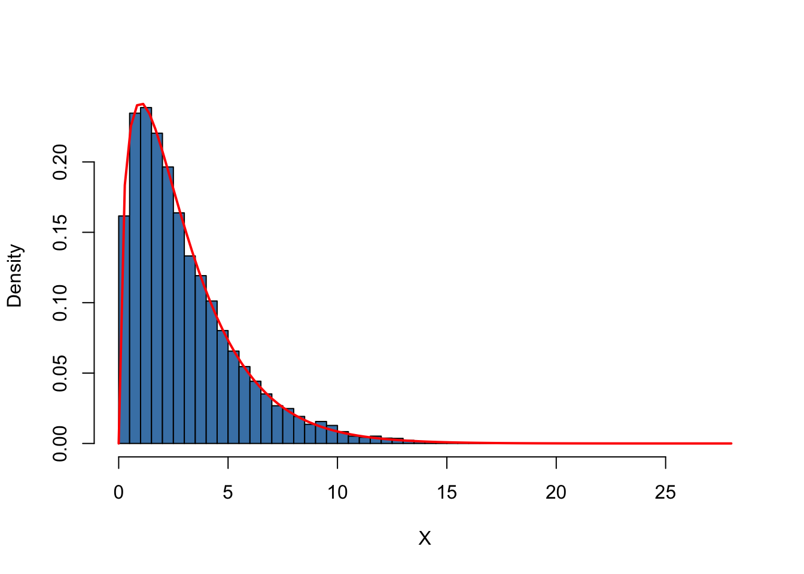
Large Sample Approximations to Sampling Distributions
Sampling distributions as considered in the last section play an important role in the development of econometric methods. There are two main approaches in characterizing sampling distributions: an “exact” approach and an “approximate” approach.
The exact approach aims to find a general formula for the sampling distribution that holds for any sample size \(n\). We call this the exact distribution or finite-sample distribution. In the previous examples of dice rolling and normal variates, we have dealt with functions of random variables whose sample distributions are exactly known in the sense that we can write them down as analytic expressions. However, this is not always possible. For \(\overline{Y}\), result (2.4) tells us that normality of \(Y_i\) implies normality of \(\overline{Y}\) (we demonstrated this for the special case of \(Y_i \overset{i.i.d.}{\sim} \mathcal{N}(0,1)\) with \(n=10\) using a simulation study that involves simple random sampling). Unfortunately, the exact distribution of \(\overline{Y}\) is generally unknown and often hard to derive (or even untraceable) if we drop the assumption that the \(Y_i\) have a normal distribution.
Therefore, as it can be guessed from its name, the “approximate” approach aims to find an approximation to the sampling distribution where it is required that the sample size \(n\) is large. A distribution that is used as a large-sample approximation to the sampling distribution is also called the asymptotic distribution. This is due to the fact that the asymptotic distribution is the sampling distribution for \(n \rightarrow \infty\), i.e., the approximation becomes exact if the sample size goes to infinity. However, the difference between the sampling distribution and the asymptotic distribution is negligible for moderate or even small sample sizes so that approximations using the asymptotic distribution are useful.
In this section we will discuss two well known results that are used to approximate sampling distributions and thus constitute key tools in econometric theory: the law of large numbers and the central limit theorem. The law of large numbers states that in large samples, \(\overline{Y}\) is close to \(\mu_Y\) with high probability. The central limit theorem says that the sampling distribution of the standardized sample average, that is, \((\overline{Y} - \mu_Y)/\sigma_{\overline{Y}}\) is asymptotically normally distributed. It is particularly interesting that both the results do not depend on the distribution of \(Y\). In other words, being unable to describe the complicated sampling distribution of \(\overline{Y}\) if \(Y\) is not normal, approximations of the latter using the central limit theorem simplify the development and applicability of econometric procedures enormously. This is a key component underlying the theory of statistical inference for regression models. Both the results are summarized in Key Concept 2.6 and Key Concept 2.7.
Key Concept 2.6
Convergence in Probability, Consistency and the Law of Large Numbers
The sample average \(\overline{Y}\) converges in probability to \(\mu_Y\): \(\overline{Y}\) is consistent for \(\mu_Y\) if the probability that \(\overline{Y}\) is in the range \((\mu_Y - \epsilon)\) to \((\mu_Y + \epsilon)\) becomes arbitrary close to \(1\) as \(n\) increases for any constant \(\epsilon > 0\). We write this as
\[ P(\mu_Y-\epsilon \leq \overline{Y} \leq \mu_Y + \epsilon) \rightarrow 1, \, \epsilon > 0 \text{ as } n\rightarrow\infty. \]
Consider the independently and identically distributed random variables \(Y_i, i=1,\dots,n\) with expectation \(E(Y_i)=\mu_Y\) and variance \(\text{Var}(Y_i)=\sigma^2_Y\). Under the condition that \(\sigma^2_Y< \infty\), that is, large outliers are unlikely, the law of large numbers thus states that
\[ \overline{Y} \xrightarrow[]{p} \mu_Y. \]
The following application simulates a large number of coin tosses (you may set the number of trials using the slider) with a fair coin and computes the fraction of heads observed for each additional toss. The result is a random path that, as stated by the law of large numbers, shows a tendency to approach the value of \(0.5\) as \(n\) grows.The core statement of the law of large numbers is that, under quite general conditions, the probability of obtaining a sample average \(\overline{Y}\) that is close to \(\mu_Y\) is high if we have a large sample size.
Consider the example of repeatedly tossing a coin where \(Y_i\) is the result of the \(i^{th}\) coin toss. \(Y_i\) is a Bernoulli distributed random variable with \(p\) the probability of observing head \[ P(Y_i) = \begin{cases} p, & Y_i = 1 \\ 1-p, & Y_i = 0 \end{cases} \ , \] where \(p = 0.5\) as we assume a fair coin. It is straightforward to show that
\[ \mu_Y = p = 0.5. \] Let \(R_n\) denote the proportion of heads in the first \(n\) tosses,
\[ R_n = \frac{1}{n} \sum_{i=1}^n Y_i. \tag{2.5}\]
According to the law of large numbers, the observed proportion of heads converges in probability to \(\mu_Y = 0.5\), the probability of tossing head in a single coin toss, \[ R_n \xrightarrow[]{p} \mu_Y=0.5 \ \ \text{as} \ \ n \rightarrow \infty.\] This result is illustrated by the interactive application in Key Concept 2.6. We now show how to replicate this using R.
The procedure is as follows:
- Sample N observations from the Bernoulli distribution, e.g., using sample().
- Calculate the proportion of heads \(R_n\) as in (2.5). A way to achieve this is to call cumsum() on the vector of observations Y to obtain its cumulative sum and then divide by the respective number of observations.
We continue by plotting the path and also add a dashed line for the benchmark probability \(p = 0.5\).
# set seed
set.seed(1)
# set number of coin tosses and simulate
N <- 30000
Y <- sample(0:1, N, replace = T)
# Calculate R_n for 1:N
S <- cumsum(Y)
R <- S/(1:N)
# Plot the path.
plot(R,
ylim = c(0.3, 0.7),
type = "l",
col = "steelblue",
lwd = 2,
xlab = "n",
ylab = "R_n",
main = "Converging Share of Heads in Repeated Coin Tossing")
# Add a dashed line for R_n = 0.5
lines(c(0, N),
c(0.5, 0.5),
col = "darkred",
lty = 2,
lwd = 1)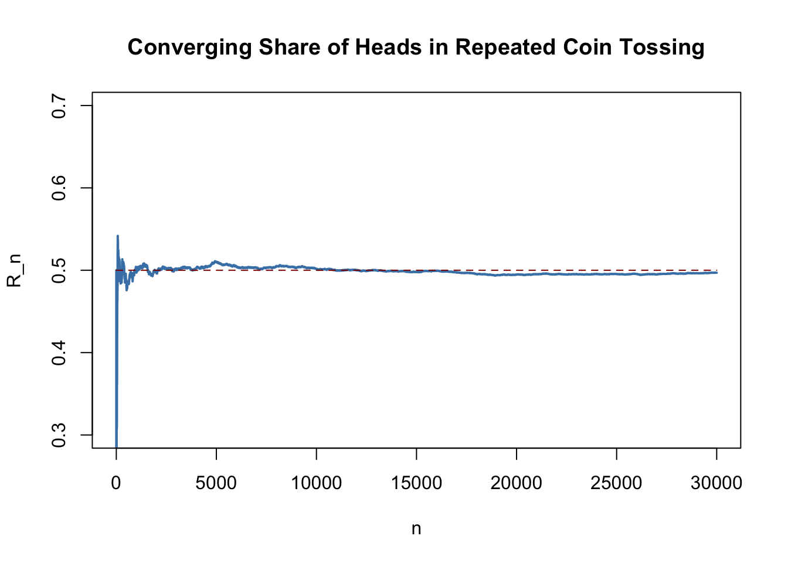
There are several things to be said about this plot.
The blue graph shows the observed proportion of heads when tossing a coin \(n\) times.
Since \(Y_i\) are random variables, \(R_n\) is a random variate, too. The path depicted is only one of many possible realizations of \(R_n\) as it is determined by the \(30000\) observations sampled from the Bernoulli distribution.
If the number of coin tosses \(n\) is small, the proportion of heads may be anything but close to its theoretical value, \(\mu_Y = 0.5\). However, as more and more observation are included in the sample, we find that the path stabilizes in the neighborhood of \(0.5\). The average of multiple trials shows a clear tendency to converge to its expected value as the sample size increases, just as claimed by the law of large numbers.
Key Concept 2.7
The Central Limit Theorem
Suppose that \(Y_1,\dots,Y_n\) are independently and identically distributed random variables with expectation \(E(Y_i)=\mu_Y\) and variance \(\text{Var}(Y_i)=\sigma^2_Y\) where \(0<\sigma^2_Y<\infty\).
The Central Limit Theorem (CLT) states that, if the sample size \(n\) goes to infinity, the distribution of the standardized sample average
\[ \frac{\overline{Y} - \mu_Y}{\sigma_{\overline{Y}}} = \frac{\overline{Y} - \mu_Y}{\sigma_Y/\sqrt{n}} , \ \]
becomes arbitrarily well approximated by the standard normal distribution.
The application below demonstrates the CLT for the sample average of normally distributed random variables with mean \(5\) and variance \(25^2\). You may check the following properties:
- The distribution of the sample average is normal.
- As the sample size increases, the distribution of \(\overline{Y}\) tightens around the true mean of \(5\).
- The distribution of the standardized sample average is close to the standard normal distribution for large \(n\).
According to the CLT, the distribution of the sample mean \(\overline{Y}\) of the Bernoulli distributed random variables \(Y_i\), \(i=1,...,n\), is well approximated by the normal distribution with parameters \(\mu_Y=p=0.5\) and \(\sigma^2_{Y} = p(1-p)/n = 0.25/n\) for large \(n\). Consequently, for the standardized sample mean we conclude that \[ \frac{\overline{Y} - 0.5}{0.5/\sqrt{n}} \tag{2.6}\] should be well approximated by the standard normal distribution \(\mathcal{N}(0,1)\). We employ another simulation study to demonstrate this graphically. The idea is as follows.
Draw a large number of random samples, \(10000\) say, of size \(n\) from the Bernoulli distribution and compute the sample averages. Standardize the averages as shown in (2.6). Next, visualize the distribution of the generated standardized sample averages by means of a histogram and compare to the standard normal distribution. Repeat this for different sample sizes \(n\) to see how increasing the sample size \(n\) impacts the simulated distribution of the averages.
In R, realize this as follows:
We start by defining that the next four subsequently generated figures shall be drawn in a \(2\times2\) array such that they can easily be compared. This is done by calling
par(mfrow = c(2, 2))before generating the figures.We define the number of repetitions reps as \(10000\) and create a vector of sample sizes named sample.sizes. We consider samples of sizes \(5\), \(20\), \(75\), and \(100\).
Next, we combine two for() loops to simulate the data and plot the distributions. The inner loop generates \(10000\) random samples, each consisting of n observations that are drawn from the Bernoulli distribution, and computes the standardized averages. The outer loop executes the inner loop for the different sample sizes n and produces a plot for each iteration.
# subdivide the plot panel into a 2-by-2 array
par(mfrow = c(2, 2))
# set the number of repetitions and the sample sizes
reps <- 10000
sample.sizes <- c(5, 20, 75, 100)
# set seed for reproducibility
set.seed(123)
# outer loop (loop over the sample sizes)
for (n in sample.sizes) {
samplemean <- rep(0, reps) #initialize the vector of sample means
stdsamplemean <- rep(0, reps) #initialize the vector of standardized sample means
# inner loop (loop over repetitions)
for (i in 1:reps) {
x <- rbinom(n, 1, 0.5)
samplemean[i] <- mean(x)
stdsamplemean[i] <- sqrt(n)*(mean(x) - 0.5)/0.5
}
# plot histogram and overlay the N(0,1) density in every iteration
hist(stdsamplemean,
col = "steelblue",
freq = FALSE,
breaks = 40,
xlim = c(-3, 3),
ylim = c(0, 0.8),
xlab = paste("n =", n),
main = "")
curve(dnorm(x),
lwd = 2,
col = "darkred",
add = TRUE)
} 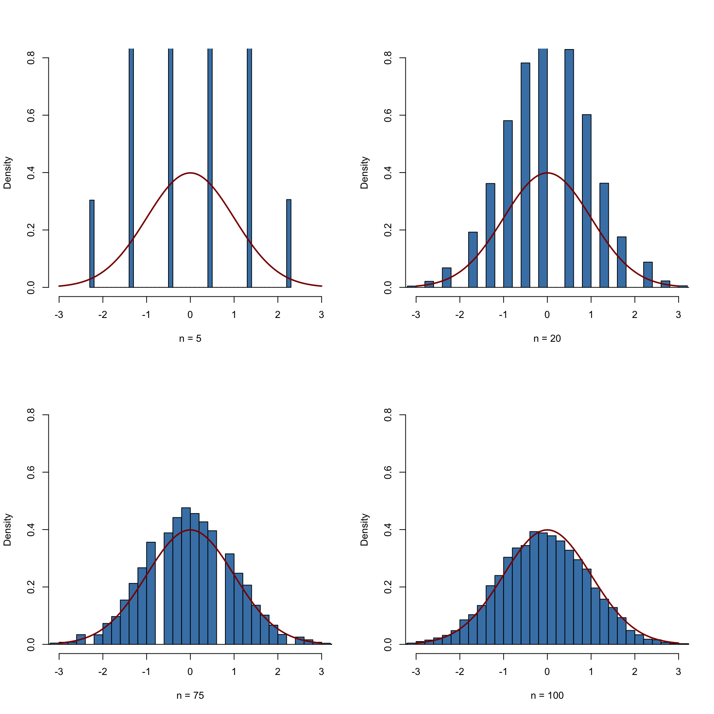
We see that the simulated sampling distribution of the standardized average tends to deviate strongly from the standard normal distribution if the sample size is small, e.g., for \(n=5\) and \(n=10\). However as \(n\) grows, the histograms approach the standard normal distribution. The approximation works quite well, see \(n=100\).
2.3 Exercises
1. Sampling
Suppose you are the lottery fairy in a weekly lottery, where \(6\) out of \(49\) unique numbers are drawn.
Instructions:
- Draw the winning numbers for this week.
Hints:
You may use the function sample() to draw random numbers, see ?sample.
The set of elements to be sampled from here is \(\{1,...,49\}\).
2. Probability Density Function
Consider a random variable \(X\) with probability density function (PDF)
\[f_X(x)=\frac{x}{4}e^{-x^2/8},\quad x\geq 0.\]
Instructions:
Define the PDF from above as a function f().(exp(a) computes \(e^a\).)
Check whether the function you have defined is indeed a PDF.
Hints:
Use function(x) {…} to define a function which takes the argument x.
In order for f() to be a PDF, its integral over the whole domain has to equal 1: \(\int_0^\infty f_X(x)\mathrm{d}x=1\).
The function integrate() performs integration. You have to specify the function to be integrated as well as lower and upper limits of integration. These may be set to \([-\infty,\infty]\) by setting the corresponding arguments to -Inf and Inf. You can access the numerical value of the computed integral by appending $value. See `?integral for a detailed description of the function.
3. Expected Value and Variance
In this exercise you have to compute the expected value and the variance of the random variable \(X\) considered in the previous exercise.
The PDF f() from the previous exercise is available in your working environment.
Instructions:
Define a suitable function ex() which integrates to the expected value of \(X\).
Compute the expected value of \(X\). Store the result in expected_value.
Define a suitable function ex2() which integrates to the expected value of \(X^2\).
Compute the variance of \(X\). Store the result in variance.
Hints:
The expected value of \(X\) is defined as \(E(X)=\int_0^\infty xf_X(x)dx\).
The value of an integral computed by integrate() can be obtained via $value.
The variance of \(X\) is defined as \(Var(X)=E(X^2)-E(X)^2\), where \(E(X^2)=\int_0^\infty x^2f_X(x)\mathrm{d}x\).
4. Standard Normal Distribution I
Let \(Z\sim\mathcal{N}(0, 1)\).
Instructions:
- Compute \(\phi(3)\), that is, the value of the standard normal density at \(c=3\).
Hints:
- Values of \(\phi(\cdot)\) can be computed using dnorm(). Note that by default dnorm() uses mean = 0 and sd = 1 so there is no need to set the corresponding arguments when you wish to obtain density values of the standard normal distribution.
5. Standard Normal Distribution II
Let \(Z\sim\mathcal{N}(0, 1)\).
Instructions:
- Compute \(P(|Z|\leq 1.64)\) by using the function pnorm().
Hints:
\(P(|Z|\leq z) = P(-z \leq Z \leq z)\).
Probabilities of the form \(P(a \leq Z \leq b)\) can be computed as \(P(Z\leq b)-P(Z\leq a)=F_Z(b)-F_Z(a)\) with \(F_Z(\cdot)\) the cumulative distribution function (CDF) of \(Z\). Alternatively, you may exploit the symmetry of the standard normal distribution.
6. Normal Distribution I
Let \(Y\sim\mathcal{N}(5, 25)\).
Instructions:
- Compute the 99% quantile of the given distribution, i.e., find \(y\) such that \(\Phi(\frac{y-5}{5})=0.99\).
Hints:
You can compute quantiles of the normal distribution by using the function qnorm().
Besides the quantile to be computed you have to specify the mean and the standard deviation of the distribution. This is done via the arguments mean and sd. Note that sd sets the standard deviation, not the variance!
sqrt(a) returns the square root of the numeric argument a.
7. Normal Distribution II
Let \(Y\sim\mathcal{N}(2, 12)\).
Instructions:
- Generate \(10\) random numbers from this distribution.
Hints:
You can use rnorm() to draw random numbers from a normal distribution.
Besides the number of draws you have to specify the mean and the standard deviation of the distribution. This can be done via the arguments mean and sd. Note that sd requires the standard deviation, not the variance!
8. Chi-squared Distribution I
Let \(W\sim\chi^2_{10}\).
Instructions:
- Plot the corresponding PDF using curve(). Specify the range of x-values as \([0,25]\) via the argument xlim.
Hints:
curve() expects a function and its parameters as arguments (here dchisq() and the degrees of freedom df).
The range of x-values in xlim can be passed as a vector of interval bounds.
9. Chi-squared Distribution II
Let \(X_1\) and \(X_2\) be two independent normally distributed random variables with \(\mu=0\) and \(\sigma^2=15\).
Instructions:
- Compute \(P(X_1^2+X_2^2>10)\).
Hints:
- Note that \(X_1\) and \(X_2\) are not \(\mathcal{N}(0,1)\) but \(\mathcal{N}(0,15)\) distributed. Hence you have to scale appropriately. Afterwards you can use pchisq() to compute the probability.
- The argument lower.tail may be helpful.
10. Student t Distribution I
Let \(X\sim t_{10000}\) and \(Z\sim\mathcal{N}(0,1)\).
Instructions:
- Compute the \(95\%\) quantile of both distributions. What do you notice?
Hints:
You may use qt() and qnorm() to compute quantiles of the given distributions.
For the \(t\) distribution you have to specify the degrees of freedom df.
11. Student t Distribution II
Let \(X\sim t_1\). Once the session has initialized you will see the plot of the corresponding probability density function (PDF).
Instructions:
Generate \(1000\) random numbers from this distribution and assign them to the variable x.
Compute the sample mean of x. Can you explain the result?
Hints:
You can use rt() to draw random numbers from a t distribution.
Note that the t distribution is fully determined through the degree(s) of freedom. Specify them via the argument df.
To compute the sample mean of a vector you can use the function mean().
12. F Distribution I
Let \(Y\sim F(10, 4)\).
Instructions:
- Plot the quantile function of the given distribution using the function curve().
Hints:
- curve() expects the function with their respective parameters (here: degrees of freedom df1 and df2) as an argument.
13. F Distribution II
Let \(Y\sim F(4,5)\).
Instructions:
- Compute \(P(1<Y<10)\) by integration of the PDF.
Hints:
Besides providing the function to be integrated, you have to specify lower and upper bounds of integration.
The additional parameters of the distribution (here df1 and df2) also have to be passed inside the call of integrate().
The value of the integral can be obtained via $value.
Hint: T and F are alternatives for TRUE and FALSE.↩︎